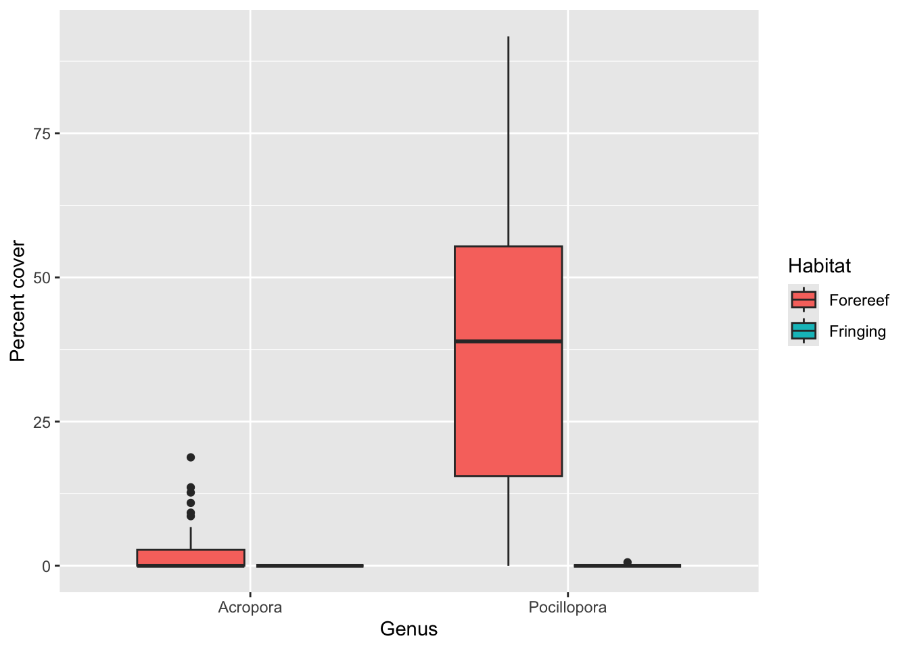

library(tidyverse)Background
This dataset comes from the Moorea Coral Reef Long Term Ecological Research (MCR LTER) site in French Polynesia, one of the longest-running coral reef monitoring programs in the world. Since 2005, researchers have surveyed the benthic (bottom-dwelling) community at six fixed sites spaced around the island of Moorea. At each site, two habitats are monitored every year: the fringing reef, a shallow zone close to shore, and the forereef, a deeper zone on the outer slope of the reef, beyond the reef crest.
At each site and habitat, divers lay out permanent transects on the reef and photograph a series of quadrats (small square sampling frames) along them every year. Back in the lab, every point in each quadrat photo is classified into a taxonomic or substrate category — a coral genus (e.g., Acropora, Pocillopora, Porites), an algae type, sand, or another functional group — and the percent of the quadrat covered by each category is calculated. Because the same transects and quadrats are resurveyed annually, this design lets researchers track how coral cover changes over time, including before and after disturbances like cyclones and bleaching events.
The columns we’ll use most are:
Site: one of six fixed LTER sites around Moorea (LTER_1–LTER_6)Habitat:Fringing(shallow, nearshore) orForereef(deeper, offshore)Depth: survey depth, in metersDate: survey year and monthTaxonomy_Substrate_or_Functional_Group: the coral genus or substrate/algae category identified in a quadratPercent_Cover: the percent of a quadrat covered by that category
We’ll use this dataset to practice filtering, renaming, summarizing, and visualizing — all skills from today’s session.
Read data
We’ll start by reading in the CSV file. The na argument tells read_csv() to treat empty strings, "NA", and "ND" (no data) as missing values, so they’re stored as proper NAs instead of text.
moorea_coral <- read_csv(
# Note: yur path will look different
"course-materials/eod/data/moorea_coral.csv",
na = c("", "NA", "ND") # This vector tells read_csv() which values to interpret as missing data
)Exercise 1
The full dataset includes dozens of taxa across many sites, habitats, and years, which is too much to visualize at once. In this exercise, we narrow our focus to a single site and year, and to just two coral genera, so we can compare how their cover differs between habitats.
- Filter the data to the LTER 1 site in 2017, keeping only the taxa Acropora and Pocillopora.
- Rename
Taxonomy_Substrate_or_Functional_Groupto something shorter and more descriptive. - Make a boxplot showing the distribution of the percent cover, by habitat (fringing vs. forereef) and species.
- Clean up the scale titles.
lter1_2017 <- moorea_coral |>
filter(
Site == "LTER_1",
Date == "2017-04",
Taxonomy_Substrate_or_Functional_Group == "Acropora" |
Taxonomy_Substrate_or_Functional_Group == "Pocillopora"
) |>
rename(genus = Taxonomy_Substrate_or_Functional_Group)
ggplot(
lter1_2017,
aes(
x = genus,
y = Percent_Cover,
fill = Habitat
)
) +
geom_boxplot() +
scale_x_discrete("Genus") +
scale_y_continuous("Percent cover")
Exercise 2
A boxplot is great for showing the shape of a distribution, but it’s hard to read exact values off of it. Here, we summarize the same filtered data numerically, calculating the average (and how much it varies) for each combination of habitat, depth, and genus.
- Continue using the filtered data from the previous exercise.
- Divide the percent cover by 100 so it’s expressed as a fraction.
- Calculate the mean and standard deviation of percent coral cover by habitat, depth, and taxon.
- Sort the output in order of depth and taxon.
lter1_2017 |>
mutate(Percent_Cover = Percent_Cover / 100) |>
summarize(
coral_cover_mean = mean(Percent_Cover),
coral_cover_sd = sd(Percent_Cover),
.by = c(Habitat, Depth, genus)
) |>
arrange(Depth, genus)# A tibble: 6 × 5
Habitat Depth genus coral_cover_mean coral_cover_sd
<chr> <dbl> <chr> <dbl> <dbl>
1 Fringing 6 Acropora 0 0
2 Fringing 6 Pocillopora 0.000154 0.000961
3 Forereef 10 Acropora 0.0319 0.0472
4 Forereef 10 Pocillopora 0.578 0.174
5 Forereef 17 Acropora 0.011 0.0169
6 Forereef 17 Pocillopora 0.183 0.150 Exercise 3
Use markdown to explain your findings from Exercises 1 and 2.
Both Acropora and Pocillopora are nearly absent from the fringing reef (6 m depth), with mean cover close to 0%. On the forereef, cover is much higher for both genera, and Pocillopora consistently outcovers Acropora — 57.8% vs. 3.19% at 10 m, and 18.3% vs. 1.1% at 17 m. Cover for both genera is also lower at 17 m than at 10 m, suggesting cover declines with depth on the forereef. Standard deviations are large relative to the means (especially for Pocillopora), which means percent cover is patchy across quadrats rather than uniform — some quadrats have much higher or lower cover than the site average.
This fringing-vs-forereef contrast makes ecological sense: fringing reefs are shallow and closer to shore, so they experience more wave stress, sedimentation, and human impact, all of which tend to favor sand and algae over branching corals like Acropora and Pocillopora. The bonus exercise below digs a little deeper by adding two more genera to the comparison.
Bonus exercise
So far we’ve only looked at Acropora and Pocillopora, but the dataset includes many more taxa. Before expanding the analysis, it’s worth checking how those taxa are labeled — this is a good habit any time you’re about to group or filter by a categorical column.
Use the distinct() function to find all unique taxa, then sort by taxa. What do you notice about Porites?
distinct(moorea_coral, Taxonomy_Substrate_or_Functional_Group) |>
arrange(Taxonomy_Substrate_or_Functional_Group) |>
print(n = Inf)# A tibble: 37 × 1
Taxonomy_Substrate_or_Functional_Group
<chr>
1 Acanthastrea
2 Acropora
3 Astrea
4 Astreopora
5 CTB
6 Cyanophyceae
7 Cyphastrea
8 Danafungia
9 Fungiidae unidentified
10 Gardineroseris
11 Goniastrea
12 Herpolitha
13 Leptastrea
14 Leptoseris
15 Lithophyllon
16 Lobactis
17 Lobophyllia
18 Macroalgae
19 Millepora
20 Montipora
21 Non-coralline Crustose Algae
22 Pachyseris
23 Pavona
24 Plesiastrea
25 Pleuractis
26 Pocillopora
27 Porites
28 Porites irregularis
29 Porites rus
30 Porites spp. Massive
31 Psammocora
32 Sand
33 Sandolitha
34 Soft Coral
35 Stylocoeniella
36 Tubastrea
37 Unknown or Other Porites shows up as four separate categories (Porites, Porites irregularis, Porites rus, and Porites spp. Massive) instead of one. Left as-is, these would be treated as four different genera in a summarize(), splitting up cover that really belongs to the same genus and understating how common Porites actually is.
Use ifelse() and str_starts() to combine all the Porites values into a single "Porites" label — str_starts() checks whether a string begins with "Porites", and ifelse() uses that check to decide whether to relabel it — then repeat the analysis from Exercise 2, expanding it to include Porites and Montipora.
include_coral <- c("Acropora", "Pocillopora", "Porites", "Montipora")
moorea_coral |>
rename(genus = Taxonomy_Substrate_or_Functional_Group) |>
mutate(genus = ifelse(str_starts(genus, "Porites"), "Porites", genus)) |>
filter(
Site == "LTER_1",
Date == "2017-04",
genus %in% include_coral
) |>
summarize(
coral_cover_mean = mean(Percent_Cover),
coral_cover_sd = sd(Percent_Cover),
.by = c(Habitat, Depth, genus)
) |>
arrange(Depth, genus)# A tibble: 12 × 5
Habitat Depth genus coral_cover_mean coral_cover_sd
<chr> <dbl> <chr> <dbl> <dbl>
1 Fringing 6 Acropora 0 0
2 Fringing 6 Montipora 0 0
3 Fringing 6 Pocillopora 0.0154 0.0961
4 Fringing 6 Porites 0.781 2.41
5 Forereef 10 Acropora 3.19 4.72
6 Forereef 10 Montipora 8.81 6.72
7 Forereef 10 Pocillopora 57.8 17.4
8 Forereef 10 Porites 0.957 1.90
9 Forereef 17 Acropora 1.1 1.69
10 Forereef 17 Montipora 1.02 1.29
11 Forereef 17 Pocillopora 18.3 15.0
12 Forereef 17 Porites 0.807 2.10 What coral is most widespread in the fringing reef, nearest the island? What about further offshore in the forereef?
Nearest the island, in the fringing reef, Porites is the most widespread genus (0.78% mean cover), while Acropora, Montipora, and Pocillopora are all essentially absent. Further offshore in the forereef, Pocillopora is by far the most widespread genus at both depths (57.8% at 10 m and 18.3% at 17 m), well above Acropora, Montipora, and Porites.
This kind of habitat-driven zonation — hardy, low-profile genera like Porites persisting close to shore, while faster-growing branching genera like Pocillopora dominate the more stable forereef — is exactly the pattern the MCR LTER’s long-term monitoring is designed to detect, along with how it shifts after disturbances.